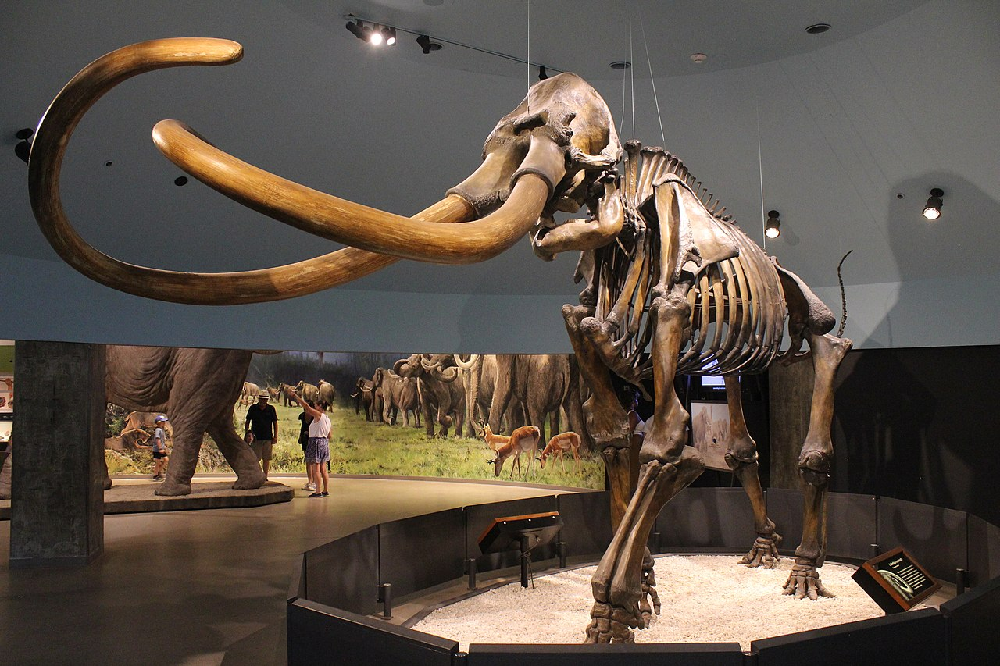
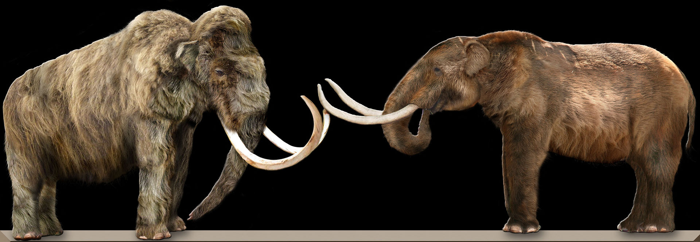
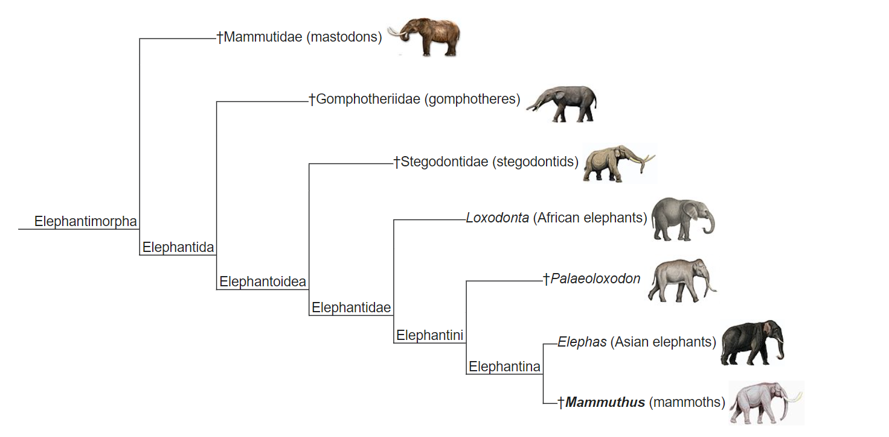
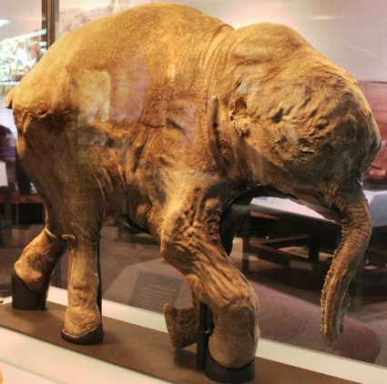
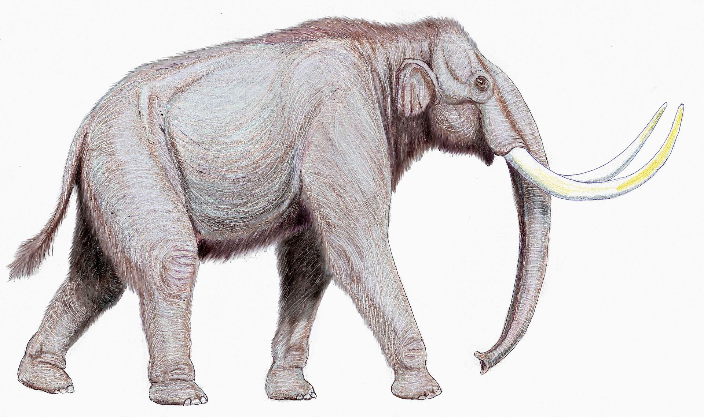
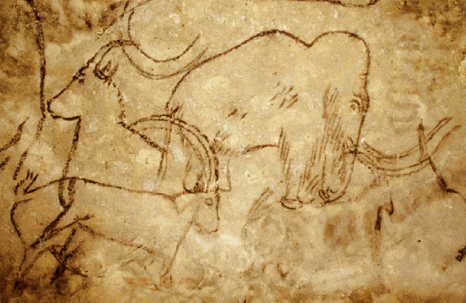
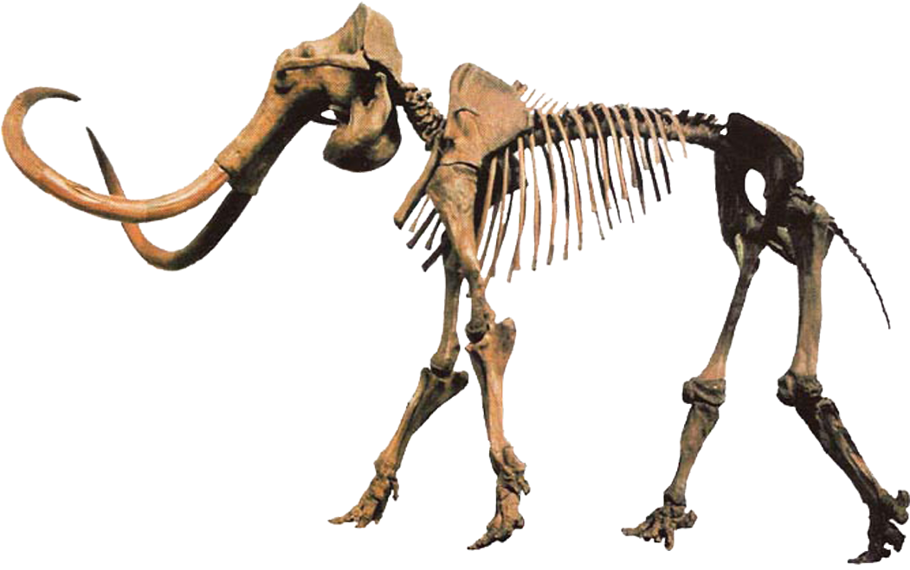
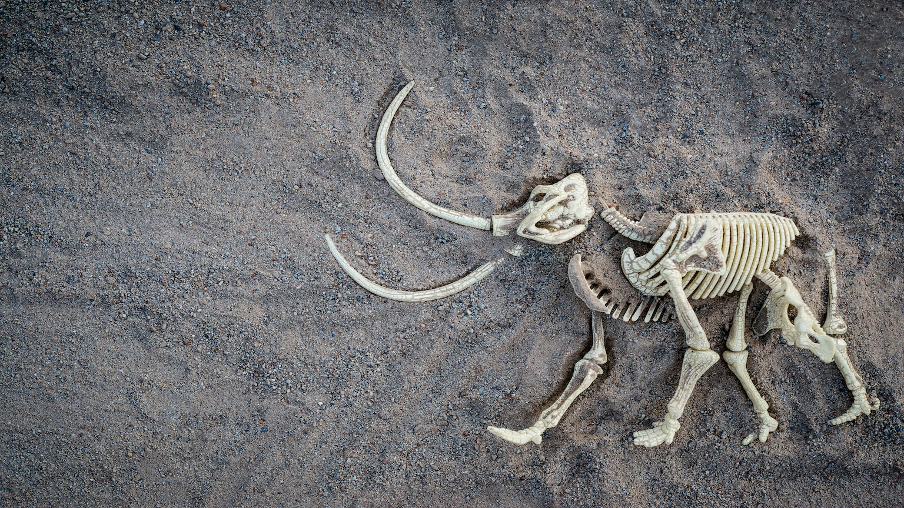
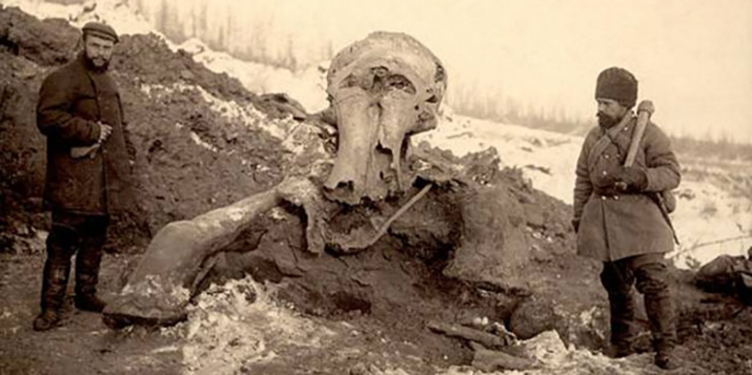
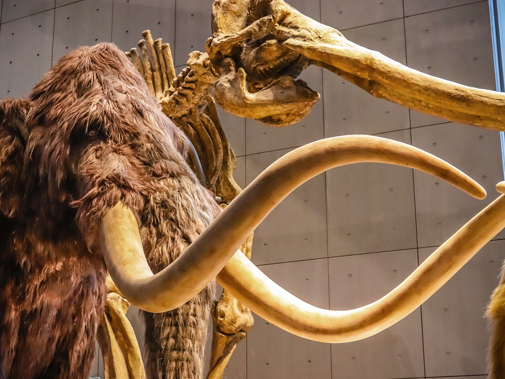

Mammoth

A mammoth is any species of the extinct elephantid genus Mammuthus, one of the many genera that make up the order of trunked mammals called proboscideans. The various species of mammoth were commonly equipped with long, curved tusks and, in northern species, a covering of long hair. They lived from the Pliocene epoch (from around 5 million years ago) into the Holocene at about 4,000 years ago, and various species existed in Africa, Europe, Asia, and North America. They were members of the family Elephantidae, which also contains the two genera of modern elephants and their ancestors. Mammoths are more closely related to living Asian elephants than African elephants.
 The oldest representative of Mammuthus, the South African mammoth (M. subplanifrons), appeared around 5 million years ago during the early Pliocene in what is now southern and eastern Africa. Descendant species of these mammoths moved north and continued to propagate into numerous subsequent species, eventually covering most of Eurasia before migrating into North America around 1.5-1.3 million years ago, becoming ancestral to the Columbian mammoth (M. columbi). The last species to emerge, the woolly mammoth (M. primigenius), developed about 400,000 years ago in East Asia, with some surviving on Russia's Wrangel Island in the Arctic Ocean, as well as possibly the Taymyr Peninsula on mainland Siberia, until as recently as roughly 3,700 to 4,000 years ago, still extant during the construction of the Great Pyramid of ancient Egypt.
Description
Like their modern relatives, mammoths were quite large. The largest known species reached heights in the region of 4 m (13.1 ft) at the shoulder and weights of up to 8 tonnes (8.8 short tons), while exceptionally large males may have exceeded 12 tonnes (13.2 short tons). However, most species of mammoth were only about as large as a modern Asian elephant (which are about 2.5 m to 3 m high at the shoulder, and rarely exceeding 5 tonnes). Both sexes bore tusks. A first, small set appeared at about the age of six months, and these were replaced at about 18 months by the permanent set. Growth of the permanent set was at a rate of about 2.5 to 15.2 cm (1 to 6 in) per year.Based on studies of their close relatives, the modern elephants, mammoths probably had a gestation period of 22 months, resulting in a single calf being born. Their social structure was probably the same as that of African and Asian elephants, with females living in herds headed by a matriarch, whilst bulls lived solitary lives or formed loose groups after sexual maturity.
 Scientists discovered and studied the remains of a mammoth calf, and found that fat greatly influenced its form, and enabled it to store large amounts of nutrients necessary for survival in temperatures as low as −50 °C (−58 °F). The fat also allowed the mammoths to increase their muscle mass, allowing the mammoths to fight against enemies and live longer. Woolly mammoths evolved a suite of adaptations for arctic life, including morphological traits such as small ears and tails to minimize heat loss, a thick layer of subcutaneous fat, long thick fur, and numerous sebaceous glands for insulation , as well as a large brown-fat hump like deposit behind the neck that may have functioned as a heat source and fat reservoir during winter.
Diet
 Depending on the species or race of mammoth, the diet differed somewhat depending on location, although all mammoths ate similar things. For the Columbian mammoth, M. columbi, the diet was mainly grazing. American Columbian mammoths fed primarily on cactus leaves, trees, and shrubs. These assumptions were based on mammoth feces and mammoth teeth. Mammoths, like modern day elephants, have hypsodont molars. These features also allowed mammoths to live an expansive life because of the availability of grasses and trees.For the Mongochen mammoth, its diet consisted of herbs, grasses, larch, and shrubs, and possibly alder. These inferences were made through the observation of mammoth feces, which scientists observed contained non-arboreal pollen and moss spores.
European mammoths had a major diet of C3 carbon fixation plants. This was determined by examining the isotopic data from the European mammoth teeth
The arctic tundra and steppe where the mammoths lived appears to have been dominated by forbs, not grass. These were richer in protein and easier to digest than grasses and wooden plants, which came to dominate the areas when the climate became wetter and warmer. This could have been a major contributor to why the arctic megafauna went extinct.
 The Yamal baby mammoth Lyuba, found in 2007 in the Yamal Peninsula in Western Siberia, suggests that baby mammoths, as do modern baby elephants, ate the dung of adult animals. The evidence to show this is that the dentition (teeth) of the baby mammoth had not yet fully developed to chew grass. Furthermore, there was an abundance of ascospores of coprophilous fungi from the pollen spectrum of the baby's mother. Coprophilous fungi are fungi that grow on animal dung and disperse spores in nearby vegetation, which the baby mammoth would then consume. Spores might have gotten into its stomach while grazing for the first few times. Coprophagy may be an adaptation, serving to populate the infant's gut with the needed microbiome for digestion.
Mammoths alive in the Arctic during the Last Glacial Maximum consumed mainly forbs, such as Artemisia; graminoids were only a minor part of their diet.
Extinction
 The woolly mammoth (M. primigenius) was the last species of the genus. Most populations of the woolly mammoth in North America and Eurasia, as well as all the Columbian mammoths (M. columbi) in North America, died out around the time of the last glacial retreat, as part of a mass extinction of megafauna in northern Eurasia and the Americas. Until recently, the last woolly mammoths were generally assumed to have vanished from Europe and southern Siberia about 12,000 years ago, but new findings show some were still present there about 10,000 years ago. Slightly later, the woolly mammoths also disappeared from continental northern Siberia. A small population survived on St. Paul Island, Alaska, up until 3750 BC, and the small mammoths of Wrangel Island survived until about 2000 BC Recent eDNA research of sediments indicates mammoths survived in north central Siberia at least as late as 2000 BC, in continental northeast Siberia until at least 5300 BC, and until at least 6600 BC in North America. The warming trend (Holocene) that occurred 12,000 years ago, accompanied by a glacial retreat and rising sea levels, has been suggested as a contributing factor. Forests replaced open woodlands and grasslands across the continent. The available habitat would have been reduced for some megafaunal species, such as the mammoth. However, such climate changes were nothing new; numerous very similar warming episodes had occurred previously within the ice age of the last several million years without producing comparable megafaunal extinctions, so climate alone is unlikely to have played a decisive role. The spread of advanced human hunters through northern Eurasia and the Americas around the time of the extinctions, however, was a new development, and thus might have contributed significantly.
 Whether the general mammoth population died out for climatic reasons or due to overhunting by humans is controversial. During the transition from the Late Pleistocene epoch to the Holocene epoch, there was shrinkage of the distribution of the mammoth because progressive warming at the end of the Pleistocene epoch changed the mammoth's environment. The mammoth steppe was a periglacial landscape with rich herb and grass vegetation that disappeared along with the mammoth because of environmental changes in the climate. Mammoths had moved to isolated spots in Eurasia, where they disappeared completely. Also, it is thought that Late Paleolithic and Mesolithic human hunters might have affected the size of the last mammoth populations in Europe There is evidence to suggest that humans did cause the mammoth extinction, although there is no definitive proof. It was found that humans living south of a mammoth steppe learned to adapt themselves to the harsher climates north of the steppe, where mammoths resided. It was concluded that if humans could survive the harsh north climate of that particular mammoth steppe then it was possible humans could hunt (and eventually extinguish) mammoths everywhere. Another hypothesis suggests mammoths fell victim to an infectious disease. A combination of climate change and hunting by humans may be a possible explanation for their extinction. Homo erectus is known to have consumed mammoth meat as early as 1.8 million years ago, though this may mean only successful scavenging, rather than actual hunting. Later humans show greater evidence for hunting mammoths; mammoth bones at a 50,000-year-old site in South Britain suggest that Neanderthals butchered the animals, while various sites in Eastern Europe dating from 15,000 to 44,000 years old suggest humans (probably Homo sapiens) built dwellings using mammoth bones (the age of some of the earlier structures suggests that Neanderthals began the practice). However, the American Institute of Biological Sciences notes that bones of dead elephants, left on the ground and subsequently trampled by other elephants, tend to bear marks resembling butchery marks, which have allegedly been misinterpreted as such by archaeologists.
 In 2021, a study using ancient environmental DNA concluded that the extinction of the mammoth was primarily caused by dramatic vegetation changes at the end of the Last Glacial Maximum, due to a changed climate and precipitation regime. During the Last Glacial Maximum, the Arctic would have had a homogeneous flora consisting of mammoth steppe-associated plants, supporting a unique community of grazing mammals, including the mammoth. Increased precipitation following the end of the LGM caused caused a significant paludification of the steppe, which has been linked to a general decrease in species diversity of the region's former inhabitants, and not just mammoths. In addition, the study found mammoths to have persisted on the mainland for far longer than previously thought, with their shrinking distribution roughly tracking the shrinkage of the mammoth steppe; their final mainland refugium, the Taymyr Peninsula, was roughly concurrent with the Wrangel population. The close relationship between decreasing mammoth populations and steppe, as well as the lack of a sudden decline that would be associated with the human overkill hypothesis, indicates that humans and mammoths may have coexisted for millennia, and thus humans may have only played a minor role in the species' extinction.
 Many hypotheses also seek to explain the regional extinction of mammoths in specific areas. Scientists have speculated that the mammoths of Saint Paul Island (Alaska), an isolated enclave where mammoths survived until about 8,000 years ago, died out as the island shrank by 80–90% when sea levels rose, eventually making it too small to support a viable population. Similarly, genome sequences of the Wrangel Island mammoths indicate a sharp decline in genetic diversity, though the extent to which this played a role in their extinction is still unclear. Another hypothesis, said to be the cause of mammoth extinction in Siberia, comes from the idea that many may have drowned. While traveling to the Northern River, many of these mammoths broke through the ice and drowned. This also explains bones remains in the Arctic Coast and some of the New Siberian Islands.
Dwarfing occurred with the pygmy mammoth on the outer Channel Islands of California, but at an earlier period. Those animals were very likely killed by early Paleo-Native Americans, and habitat loss caused by a rising sea level that split Santa Rosae into the outer Channel Islands.